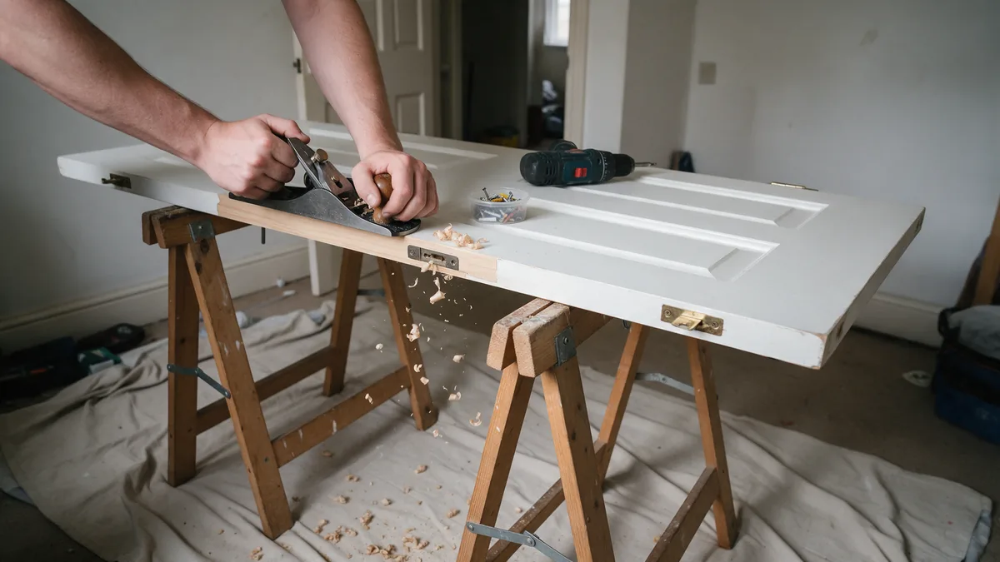

Generated photoWhat this coversOn the list
- Doors that catch or will not shutDiagnosed before anything is planed, because planing a door that has only dropped makes the problem permanent.
- Hinges, adjustment and re hangingPacking, moving or replacing hinges, and re hanging a door the other way round where it makes a room work better.
- uPVC door adjustmentHinges and keeps on uPVC doors that have moved with the weather and stopped lifting into lock.
- Handles, latches and strike platesHandles come loose, latches stop springing back, and strike plates end up out of line as the frame moves.
- Replacing a like for like lockSwapping a cylinder or a mortice lock for an equivalent one, including after a key is lost.
- Draught strips and thresholdsBrush strips, seals and threshold bars on doors that have started to let the weather in.
What goes elsewherePassed on
- Getting you in when you are locked outThat is a locksmith with the right tools. We can come afterwards and sort whatever caused it.
- Fitting a whole new door setA new door, frame and all, is a joiner or a window and door fitter.
- Fire door certificationA fire door is a specified product fitted to a specification. We will not pretend otherwise.
Drawn, not photographed
Why a door stops shutting
The same door, rotated about the bottom hinge by a couple of degrees. That is all it takes. It catches at the top of the latch edge and gaps at the bottom, which is the giveaway.
Hanging square
Dropped on the hinge side
Read the gap before you reach for a plane
Stand in front of the door and look at the gap down the latch side. If it is even top to bottom and the door still catches, something has swollen or the keep has moved. If the gap is tight at the top and open at the bottom, the door has dropped on its hinges and the frame is fine.
That second one is the common one, and it matters, because the fix is at the hinge side. Take a few millimetres off the latch edge instead and you will have a door that shuts today and a door with a permanent gap for the rest of its life.
What makes a door drop
Usually the top hinge. The screws there take the most pull, and in a soft old frame they slowly lose their grip. Longer screws into solid timber, or plugging and re fixing, will often pull the whole door back square in ten minutes.
Sometimes the hinge itself has worn, and sometimes a previous repair has packed one hinge and not the others, which throws the door out in the opposite direction.
Swelling, and why it comes and goes
Timber takes up moisture and gives it back. A door that binds in a wet November and is fine in March has not moved on its hinges, it has swollen, and the answer is usually to ease the smallest amount off the right place and seal the edge so it stops drinking.
uPVC doors are a different animal
A uPVC door locks by lifting the handle, which throws hooks or rollers into keeps up and down the frame. When one of those stops meeting its keep, the handle gets stiff and eventually will not lift. Almost all of them have adjustment at the hinges and at the keeps, and a few turns in the right place brings it back. Forcing the handle on a stiff one is how the mechanism inside gets broken.
Questions
About this sort of job
My door only sticks in winter. Is that the hinges?
Probably not. That pattern is usually the timber swelling. We will look at the gap before deciding.
Can you change the locks after a key goes missing?
A like for like cylinder or mortice lock, yes. Getting into a door you cannot open is a locksmith.
My uPVC door needs a hard pull to lock
Common, and usually adjustment. Worth getting looked at before it stops lifting entirely.
Put it on the list
Send the room, the thing and what is wrong with it, and we will tell you what fits in a visit.